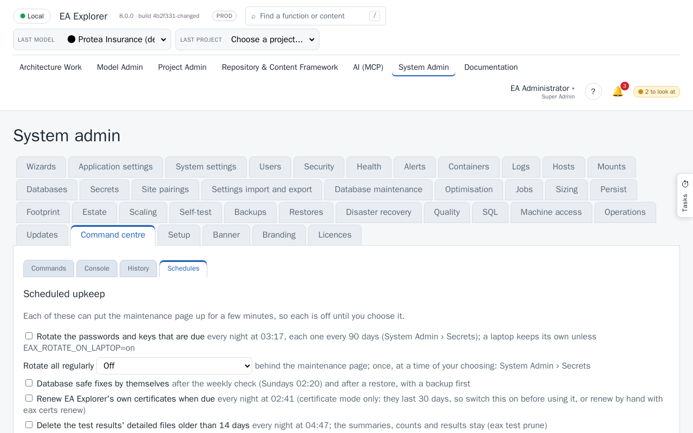

Schedule a command
For: System Admin
An eax command that runs by itself: a nightly backup, a weekly check, or once at a time.

#/admin/commands/schedulesWhy do this
Backups, checks and exports are best run on a schedule. The command centre runs an eax command nightly, weekly or once, and keeps every run's history. See Running the installation.
The installation is built to look after itself as far as it can, and to ask before anything risky. These tasks are the decisions it leaves to you: what to run, when, and how far to trust a change.
In TOGAF terms: Outside the method: this keeps the tool that holds the Architecture Repository running. See EA Explorer and the TOGAF Standard.
The goal: A command runs by itself when it should.
Before you start You need the Super Admin or IT Admin role.
Steps
- Open System Admin › Tools › Command centre, Schedules.
- New schedule: choose the command and its options, then when it runs: every night, every week, every hour, once, or a cron line. Times are in the installation's time zone.
- A command that deletes everything needs a Super Admin and the installation's name, once, when the schedule is made.
- Save. Every run is in the History.
Check it worked
The schedule shows its next run; after it runs, its last result.